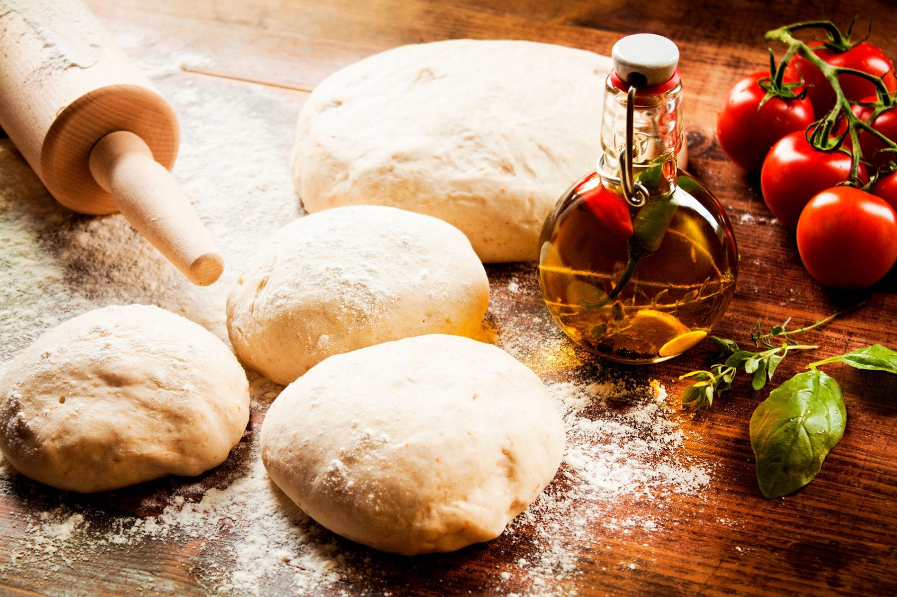

10 anos de experiência deixaram nossas pizzas ainda mais saborosas
Uma empresa jovem, situada no polo industrial de Curitiba, com apenas 10 anos no mercado Paranaense.
Trouxe do interior de São Paulo um conceito de massa leve e crocante, que tem conquistado a cada dia, paladares muito exigentes. Com uma receita única, de família, passada de geração em geração, conquistou o mercado paulista a mais de 25 anos.
Nosso estabelecimento
Nosso estabelecimento está localizado no coração da cidade.
Benefícios
- Nosso principal objetivo é prezar pela qualidade de nossos produtos e satisfação de nossos clientes e para isso levamos em consideração os seguintes critérios:
- Rígidos padrões de higiene ao longo de todo processo produtivo.
- Matérias primas selecionadas e importadas.
- Utilizamos um processo mais artesanal, o que agrega mais qualidade e carinho aos nossos produtos.